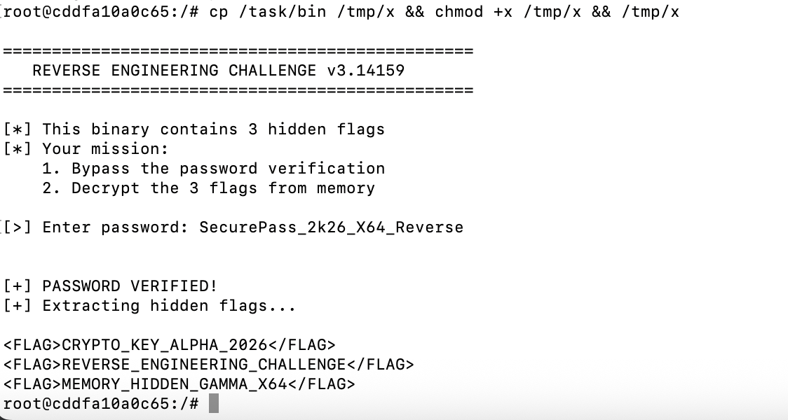

Statically linked 64-bit ELF, hand-written assembly, not stripped. All symbol names are present.
The strings in .data have no null terminator, so Ghidra did not mark them as strings and left them as raw bytes.
The password check is a loop with a counter.
AL holds the input byte, BL the reference byte, compared directly. The counter runs to 27, then the code jumps to verify_checksum.
Since the string has no terminator, cmp rcx, 0x1b is the only place the length exists. Marking those 27 bytes as a string gives SecurePass_2k26_X64_Reverse.
password_verify_loop:
CMP RCX, 0x1b ; counter against 27
JGE verify_checksum
MOV AL, byte ptr [RCX + input_buffer] ; byte of user input
MOV RBX, actual_password
MOV BL, byte ptr [RBX + RCX*0x1] ; byte of the real password
CMP AL, BL
JNZ stage_fail
MOVZX RAX, AL
ADD R8, RAX ; accumulate the sum
INC RCX
JMP password_verify_loopTwo stages: byte-by-byte comparison, then a checksum of the accumulated sum.
The second stage is redundant. If all 27 bytes matched, the sum matches by definition, so the checksum can never fail.
The flags are then XOR-decrypted and printed. The keys are hardcoded in the instructions right before each call: 0x47, 0x5A, 0x6C.
magic1, magic2, magic3 are hexspeak constants (0xDEADBEEFCAFEBABE, 0xFEEDFACEDEADC0DE, 0xACCEFADEDEADBEEF). They look like intended XOR keys, but nothing references them.
password_product is the same: the value is stored, nothing reads it.
Password: SecurePass_2k26_X64_Reverse
Flags:
CRYPTO_KEY_ALPHA_2026
REVERSE_ENGINEERING_CHALLENGE
MEMORY_HIDDEN_GAMMA_X64
A program can look more protected than it is. The verification has two stages but only the first one does anything, and part of the data is never touched at all.
← all writeups